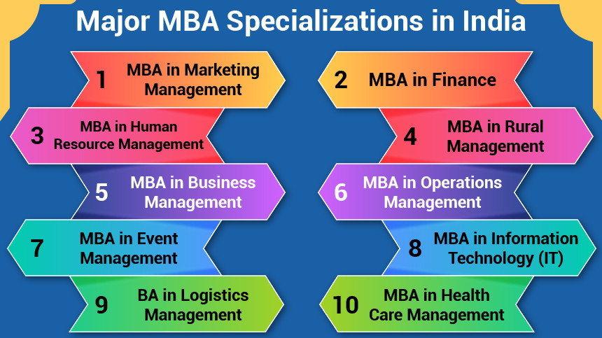
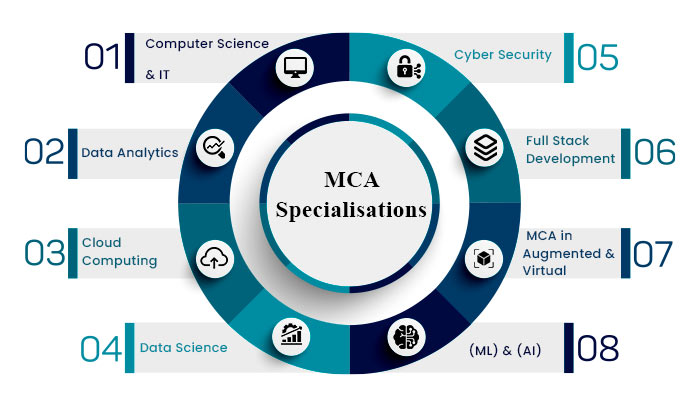

Master of Business Administration program that equips its students with the necessary skills to make a career in business and management.

It is in Management branch that finance, marketing, HR, operations, and entrepreneurship. In addition to these core principles, mechanical engineers use tools such as computer-aided design (CAD), computer-aided manufacturing (CAM), and product lifecycle management to design and analyze manufacturing plants, industrial equipment and machinery, heating and cooling systems, transport systems, aircraft, watercraft, robotics, medical devices, weapons, and others.
Doctoral Programme Ph.D
The Ph.D programme is offered in disciplines like Marketing, Finance and Human resource management.
To demonstrate the competence to carry out independent and original academic research.
To prepare students for career opportunities in Management research and teaching, and other areas requiring research and analytical skills.
To present and match research results which are equivalent to that of a peer-reviewed academic publication.
To improve the theory and practice of Business and Management, and to develop new management concepts.
Faculty Development Programme-FDP
The Faculty Development Programme at MEASI Institute of Management gives participants with the chance to refocus, to immerse themselves within the latest brooding about best follow in management, and supply them with personal and skilled tools to strengthen their effectiveness as a lecturer and researchers. It’s particularly suited to management educators seeking to strengthen their understanding of core general management yet as gain exposure to advanced topics, learn and experiment with effective education techniques, and gain familiarity with essential aspects of winding up analysis studies. The FDP can modify the participants to effectively use numerous education tools in their various lecture rooms, and develop their own cases and different teaching/research materials.
Management Devlopment Program-MDP
MIM considers imparting quality education to business executives is as important as it is to educate the budding managers. Training managers in key business fundamentals as well as in contemporary areas of management has always been an important part of its offerings.
Master of Computer Application

Master of Computer Application. MCA is a postgraduate course that trains students in the various aspects of computer programs, application software, computer architecture, operating systems and many more.